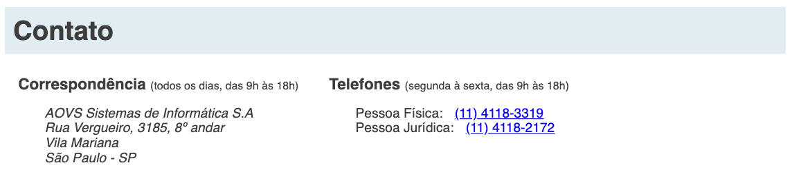
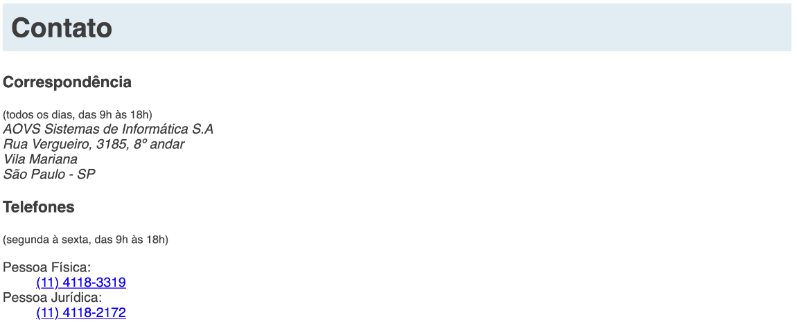

O resultado final com todos os estilos será o seguinte:

Nesse exercício não se preocupe em deixar a página com o mesmo estilo acima. Antes de mais nada, escreva o conteúdo da página e depois escolha as tags mais semânticas que você lembrar para cada parte do conteúdo.
O rodapé deve conter as seguintes informações:

Ao final ainda não teremos os estilos como queremos, porém escolhendo as tags que trazem uma semântica legal teremos o seguinte resultado:
